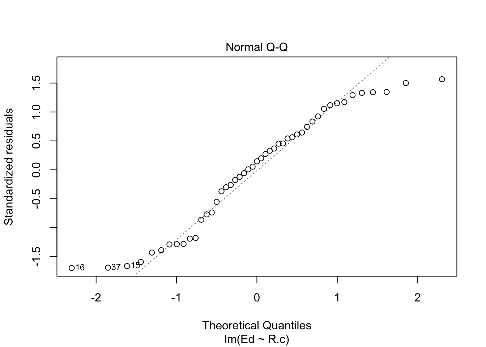

Assignments
I want you to submit your assignment as a PDF, so I can keep a record of what the code looked like that day. I also want you to include your answers on your personal GitHub website. This will be good practice for editing your website and it will help you produce something you can keep after the class is over.
Download the Assignment1.Rmd file from Canvas. You can use this as a template for writing your answers. It’s the same as what you can see on my website in the Assignments tab. Once we’re done with this I’ll edit the text on the website to include the solutions.
On RStudio, open a new R script in RStudio (File > New File > R Script). This is where you can test out your R code. You’ll write your R commands and draw plots here.
Once you have finalized your code, copy and paste your results into this template (Assignment 1.Rmd). For example, if you produced a plot as the solution to one of the problems, you can copy and paste the R code in R markdown by using the
``{r} ```command. Answer the questions in full sentences and Save.Produce a PDF file with your answers. To do this, knit to PDF (use Knit button at the top of RStudio), locate the PDF file in your docs folder (it’s in the same folder as the Rproj), and submit that on on Canvas in Assignment 1.
Build Website, go to GitHub desktop, commit and push. Now your solutions should be on your website as well.
Assignment 1
This assignment is due on Canvas on Monday 9/20 before class, at 10:15 am. Include the name of anyone with whom you collaborated at the top of the assignment.
Problem 1
Install the datasets package on the console below using install.packages("datasets"). Now load the library.
library(datasets)Load the USArrests dataset and rename it dat. Note that this dataset comes with R, in the package datasets, so there’s no need to load data from your computer. Why is it useful to rename the dataset?
Answer: Well, we want to replicate analyses. That’s why it’s nice to rename data.
dat <- USArrestsProblem 2
Use this command to make the state names into a new variable called State.
library(dplyr)
dat$state <- tolower(rownames(USArrests))I used the dplyr package in order to rename this variable. I am sure there are other ways to do this but I used old reliable!
This dataset has the state names as row names, so we just want to make them into a new variable. We also make them all lower case, because that will help us draw a map later - the map function requires the states to be lower case.
List the variables contained in the dataset USArrests.
names(dat)## [1] "Murder" "Assault" "UrbanPop" "Rape" "state"Answer: The four variables are Murder, Assault, UrbanPop, and Rape.
Problem 3
What type of variable (from the DVB chapter) is Murder? Answer: quantitative variable
What R Type of variable is it?
typeof(dat$Murder)## [1] "double"Answer: double
Problem 4
What information is contained in this dataset, in general? What do the numbers mean?
Answer: The information in this dataset is a set of the number of arrests for different violent crimes in the United States, as divided by state. The numbers represent the numeric value of arrests per 100,000 residents for assault, murder, and rape in each of the 50 US states, also providing the percent of the population living in urban areas (UrbanPop).
Problem 5
Draw a histogram of Murder with proper labels and title.
hist(dat$Murder, col = 'red', ylab = 'Frequency', xlab = 'Murder Arrests per 100,000 residents', main = 'Histogram of Murder Arrests in the US', sub = '(by state)')Problem 6
Please summarize Murder quantitatively. What are its mean and median? What is the difference between mean and median? What is a quartile, and why do you think R gives you the 1st Qu. and 3rd Qu.?
summary(dat$Murder)## Min. 1st Qu. Median Mean 3rd Qu. Max.
## 0.800 4.075 7.250 7.788 11.250 17.400Answer: The mean of the Murder variable is 7.788 (murder arrests per 100,000 residents of a state). The median is 7.250 (murder arrests per 100,000 residents of a state). The difference between these two values quantitatively is 0.538. The difference qualitatively is that the mean represents the average number of murder arrests per 100,000 residents of all US states while the median is the middle value of the data set, showing the data has a slight right skew. A quartile isdivides the dataset into four parts, with Q1 being the median of the lower half of the dataset and Q3 being the median of the upper half of the data set. R gives you this information because quartiles can be helpful in determining where a specific data point falls in the set; for example, if a value for “Murders” is greater than Q3, 11.250, we can more reasonably assume that this state has an exceptionally high murder rate in comparison to other states in the US. If a state has a value for “Murders” that is less than 4.075, we can more reasonably assume that this state is relatively safer than other US states!
Problem 7
Repeat the same steps you followed for Murder, for the variables Assault and Rape. Now plot all three histograms together. You can do this by using the command par(mfrow=c(3,1)) and then plotting each of the three.
hist(dat$Assault, col = 'red', ylab = 'Frequency', xlab = 'Assault Arrests per 100,000 residents', main = 'Histogram of Assault Arrests in the US', sub = '(by state)')summary(dat$Assault)## Min. 1st Qu. Median Mean 3rd Qu. Max.
## 45.0 109.0 159.0 170.8 249.0 337.0hist(dat$Rape, col = 'red', ylab = 'Frequency', xlab = 'Rape Arrests per 100,000 residents', main = 'Histogram of Rape Arrests in the US', sub = '(by state)')summary(dat$Rape)## Min. 1st Qu. Median Mean 3rd Qu. Max.
## 7.30 15.07 20.10 21.23 26.18 46.00par(mfrow=c(3,1))
hist(dat$Murder, col = 'red', ylab = 'Frequency', xlab = 'Murder Arrests per 100,000 residents', main = 'Histogram of Murder Arrests in the US', sub = '(by state)')
hist(dat$Assault, col = 'red', ylab = 'Frequency', xlab = 'Assault Arrests per 100,000 residents', main = 'Histogram of Assault Arrests in the US', sub = '(by state)')
summary(dat$Assault)## Min. 1st Qu. Median Mean 3rd Qu. Max.
## 45.0 109.0 159.0 170.8 249.0 337.0hist(dat$Rape, col = 'red', ylab = 'Frequency', xlab = 'Rape Arrests per 100,000 residents', main = 'Histogram of Rape Arrests in the US', sub = '(by state)')
What does the command par do, in your own words (you can look this up by asking R ?par)?
Answer: The par function allows an R user to look at the graphical parameters that control how graphs are displayed. In the case of the par(mfrow=c(3,1)) function, we are able to not only look at the graphical parameters, but control them so that we can decide how many subplots we want displayed.
What can you learn from plotting the histograms together?
Answer: From plotting the histograms together, we can view a comparison of the distributions in relation to each other, examining skew and quartile arrangement to see how distributions vary by crime type. On a more general note, plotting the histograms together allows us to see generally how frequency and distribution relationships among multiple variables interact, allowing a viewer a more clear image of the relationship between variables while still being able to view a more individualistic look at each histogram.
Problem 8
In the console below (not in text), type install.packages("maps") and press Enter, and then type install.packages("ggplot2") and press Enter. This will install the packages so you can load the libraries.
Run this code:
library(maps)
library(ggplot2)
ggplot(dat, aes(map_id=state, fill=Murder)) +
geom_map(map=map_data("state")) +
expand_limits(x=map_data("state")$long, y=map_data("state")$lat)
What does this code do? Explain what each line is doing.
Answer: ggplot is the most basic implementation of any data visualization in R. In this instance, the first line of code is filling out the basic information of the data visual by specifying the variables which are involved in the plot. The second line of code employs the maps package and ggplot2 package to choose specifically to create a mapping of the selected variables, using states as the selected implementation of the map. The third line employs the expand_limit function in order to ensure that the limits of the visualization include a single value for all aspects of the plot, implying what should be included in the scale.
\[\\[2in]\]
Assignment 2
Instructions: Copy your code, paste it into a Word document, and turn it into Canvas. You can turn in a .docx or .pdf file. Show any EDA (graphical or non-graphical) you have used to come to this conclusion.
Problem 1: Load data
Set your working directory to the folder where you downloaded the data.
setwd("~/Documents/GitHub/SophieCRIM250")Read the data
dat <- read.csv(file = 'dat.nsduh.small.1.csv')What are the dimensions of the dataset?
names(dat)## [1] "mjage" "cigage" "iralcage" "age2" "sexatract" "speakengl"
## [7] "irsex"dim(dat)## [1] 171 7- The dimensions are 171 x 7
Problem 2: Variables
Describe the variables in the dataset. - mjage is a variable that denotes how old someone was the first time they used marijuana or hashish - cigage is a variable that denotes how old someone was when they first started smoking cigarettes every day - iralcage is a variable that denotes how old someone was when they first tried alcohol, numbers greater than 900 implying never used or lack of answer - age2 is a variable that splits people up into groups based on respondent age - sexatract is a variable that splits people into groups based on sexual attraction, each number denoting a different sexual preference - speakengl is a variable that splits people into groups based off of their english literacy - irsex is a variable that splits people into two different groups based on a binary gender system, 1 being male and 2 being female
What is this dataset about? Who collected the data, what kind of sample is it, and what was the purpose of generating the data? - This dataset is about the health and drug use statistics of the United States. - This data is from the National Survey on Drug Use and Health, conducted by The Substance Abuse and Mental Health Services Administration in the US Department of Health and Human Services. - This is a random sample. - The data was generated for the sake of government agencies, private organizations, individual researchers, and the public at large for a number of different purposes. - This data is used mainly to provide more information on substance use and demographic statistics in the United States.
Problem 3: Age and gender
What is the age distribution of the sample like? Make sure you read the codebook to know what the variable values mean.
hist(dat$age2)
summary(dat$age2)## Min. 1st Qu. Median Mean 3rd Qu. Max.
## 4.00 13.00 15.00 13.98 15.00 17.00- The age distribution is left skewed, with a mean of 13.98 (representing ages 26-29) and median of 15 (representing ages 35-49). # Do you think this age distribution representative of the US population? Why or why not?
- I do feel like this sample is representative. The distribution of ages in the age set are misleading; the ages of 18-49 (as represented by groups 7-15) are the majority of the sample, which is consistent with the most recent US Census. # Is the sample balanced in terms of gender? If not, are there more females or males?
summary(dat$irsex)## Min. 1st Qu. Median Mean 3rd Qu. Max.
## 1.000 1.000 1.000 1.468 2.000 2.000- This sample is fairly balanced in terms of gender. The mean for the irsex variable is 1.468, meaning the sample is fairly balanced in terms of sex. # Use this code to draw a stacked bar plot to view the relationship between sex and age. What can you conclude from this plot?
tab.agesex <- table(dat$irsex, dat$age2)
barplot(tab.agesex,
main = "Stacked barchart",
xlab = "Age category", ylab = "Frequency",
legend.text = rownames(tab.agesex),
beside = FALSE) # Stacked bars (default) - This plot demonstrates that the distribution is fairly balanced in age, with the majority of participants on either tail of the data being mainly males.
- This plot demonstrates that the distribution is fairly balanced in age, with the majority of participants on either tail of the data being mainly males.
Problem 4: Substance use
For which of the three substances included in the dataset (marijuana, alcohol, and cigarettes) do individuals tend to use the substance earlier?
par(mfrow=c(3,1))
hist(dat$mjage, col = 'red', ylab = 'Frequency', xlab = 'Age category', main = 'Histogram of Marijuana Usage')
hist(dat$cigage , col = 'red', ylab = 'Frequency', xlab = 'Age category', main = 'Histogram of Cigarette Usage')
hist(dat$iralcage, col = 'red', ylab = 'Frequency', xlab = 'Age category', main = 'Histogram of Alcohol Consumption')- Individuals tend to use marijuana at the youngest age out of the three substances.
Problem 5: Sexual attraction
library(ggplot2)What does the distribution of sexual attraction look like? Is this what you expected?
hist(dat$sexatract)
summary(dat$sexatract)## Min. 1st Qu. Median Mean 3rd Qu. Max.
## 1.00 1.00 1.00 3.07 1.00 99.00table(dat$sexatract)##
## 1 2 3 4 5 6 99
## 136 16 9 3 3 1 3- According to the numeric system for sexual attraction, this gives the distribution a strong right skew.
- This is not a necessarily surprising result, considering there is generally a strong heterosexual representation in the United States, especially on representative surveys.
- While I do not feel this is truly representative of the United States, there are many people who may feel uncomfortable correctly identifying sexual preference on a survey used by government organizations and regarding personal information (even if it is later encoded).
What is the distribution of sexual attraction by gender?
genatt <- table(dat$irsex, dat$sexatract)
barplot(genatt,
main = "Stacked barchart",
xlab = "Gender", ylab = "Frequency",
legend.text = rownames(genatt),
beside = FALSE) # Stacked bars (default)sum(dat$sexatract == 1 & dat$irsex == 1)## [1] 82- 82## [1] -82sum(dat$sexatract == 1 & dat$irsex == 2)## [1] 54- 54## [1] -54- The distribution of sexual attraction is highly populated by those who identified (via the codebook) as only being attracted to the opposite gender.
- A smaller number of women identify as being heterosexual than men, thought this could be slightly biased due to a smaller sample size of women. ## Problem 6: English speaking
What does the distribution of English speaking look like in the sample? Is this what you might expect for a random sample of the US population? summary(dat\(speakengl) table(dat\)speakengl) - Majority of the sample are English speakers, with 169 of the 171 respondents self-identifying as speaking English well or very well and only two respondents not speaking English well. - This is not what I would expect from a random sample of the US, but makes sense in the fact that this is a survey administered in English, probably leading to some sampling bias in a high yield of English speakers. Are there more English speaker females or males?
sum(dat$speakengl == 1 & dat$irsex == 1)## [1] 84- 84## [1] -84sum(dat$speakengl == 1 & dat$irsex == 2)## [1] 77- 77## [1] -77sum(dat$speakengl == 2 & dat$irsex == 1)## [1] 7- 7## [1] -7sum(dat$speakengl == 2 & dat$irsex == 2)## [1] 1- 1## [1] -1sum(dat$speakengl == 3 & dat$irsex == 1)## [1] 0- 0## [1] 0sum(dat$speakengl == 3 & dat$irsex == 2)## [1] 2- 2## [1] -2- Assuming that we say that “not an English speaker” is characterized by someone self-assessing themselves as speaking English “not well,” there is a higher number of female non-English speakers.
- This means that, from this very limited data set, there is a higher number of male English speakers.
Exam 1
Instructions
Create a folder in your computer (a good place would be under Crim 250, Exams).
Download the dataset from the Canvas website (fatal-police-shootings-data.csv) onto that folder, and save your Exam 1.Rmd file in the same folder.
Download the README.md file. This is the codebook.
Load the data into an R data frame.
dat <- read.csv("~/Documents/GitHub/SophieCRIM250/fatal-police-shootings-data.csv")Problem 1 (10 points)
- Describe the dataset. This is the source: https://github.com/washingtonpost/data-police-shootings . Write two sentences (max.) about this.
This data is a recording of fatal shootings by police officers in the line of duty since Jan. 1, 2015. This data, as recorded in the Washington Post database, is separated by circumstances under which the fatality ensued.
- How many observations are there in the data frame?
dim(dat)## [1] 6594 17There are 6594 observations in this data set, categorized by 17 different variables.
- Look at the names of the variables in the data frame. Describe what “body_camera”, “flee”, and “armed” represent, according to the codebook. Again, only write one sentence (max) per variable.
names(dat)## [1] "id" "name"
## [3] "date" "manner_of_death"
## [5] "armed" "age"
## [7] "gender" "race"
## [9] "city" "state"
## [11] "signs_of_mental_illness" "threat_level"
## [13] "flee" "body_camera"
## [15] "longitude" "latitude"
## [17] "is_geocoding_exact"body_camera: This variable indicates whether or not the officer involved in the incident was wearing a body camera. flee: This variable indicates whether or not the victim appeared to be moving away from the officer at the time of the shooting, divided into three possibilities: fleeing in a car, fleeing on foot, not fleeing. armed: This variable indicates whether or not a victim was considered to be armed at the time of the shooting and if so, what they were armed with.
- What are three weapons that you are surprised to find in the “armed” variable? Make a table of the values in “armed” to see the options.
armeddat <- table(dat$armed)
armeddat##
## air conditioner
## 207 1
## air pistol Airsoft pistol
## 1 3
## ax barstool
## 24 1
## baseball bat baseball bat and bottle
## 20 1
## baseball bat and fireplace poker baseball bat and knife
## 1 1
## baton BB gun
## 6 15
## BB gun and vehicle bean-bag gun
## 1 1
## beer bottle binoculars
## 3 1
## blunt object bottle
## 5 1
## bow and arrow box cutter
## 1 13
## brick car, knife and mace
## 2 1
## carjack chain
## 1 3
## chain saw chainsaw
## 2 1
## chair claimed to be armed
## 4 1
## contractor's level cordless drill
## 1 1
## crossbow crowbar
## 9 5
## fireworks flagpole
## 1 1
## flashlight garden tool
## 2 2
## glass shard grenade
## 4 1
## gun gun and car
## 3798 12
## gun and knife gun and machete
## 22 3
## gun and sword gun and vehicle
## 1 17
## guns and explosives hammer
## 3 18
## hand torch hatchet
## 1 14
## hatchet and gun ice pick
## 2 1
## incendiary device knife
## 2 955
## knife and vehicle lawn mower blade
## 1 2
## machete machete and gun
## 51 1
## meat cleaver metal hand tool
## 6 2
## metal object metal pipe
## 5 16
## metal pole metal rake
## 4 1
## metal stick microphone
## 3 1
## motorcycle nail gun
## 1 1
## oar pellet gun
## 1 3
## pen pepper spray
## 1 2
## pick-axe piece of wood
## 4 7
## pipe pitchfork
## 7 2
## pole pole and knife
## 3 2
## railroad spikes rock
## 1 7
## samurai sword scissors
## 4 9
## screwdriver sharp object
## 16 14
## shovel spear
## 7 2
## stapler straight edge razor
## 1 5
## sword Taser
## 23 34
## tire iron toy weapon
## 4 226
## unarmed undetermined
## 421 188
## unknown weapon vehicle
## 82 213
## vehicle and gun vehicle and machete
## 8 1
## walking stick wasp spray
## 1 1
## wrench
## 1In the armed variable, I was most surprised to see that people were “armed” with a pitchfork (very medieval), a pen (???), and an air conditioner.
Problem 2 (10 points)
- Describe the age distribution of the sample. Is this what you would expect to see?
hist(dat$age)
The distribution shows a right skew to the ages of victims in recorded fatal shootings. I feel like this is fairly predictable, as the average age in the US is 38, and we know that fatal shootings often occur in over-policed low-income areas where the majority of people who are out and about are the working class of these areas, putting majority of their ages around 20-40 years old.
- To understand the center of the age distribution, would you use a mean or a median, and why? Find the one you picked.
summary(dat$age)## Min. 1st Qu. Median Mean 3rd Qu. Max. NA's
## 6.00 27.00 35.00 37.12 45.00 91.00 308I would use the median of the data. Because the data is skewed, the median is a better measure of central tendency than the mean as it is more representative of the sample given what we know about it’s distribution. The median is 35, as in 35 years old is the average age of someone involved in a fatal shooting in the United States at the hand of police.
- Describe the gender distribution of the sample. Do you find this surprising?
table(dat$gender)##
## F M
## 3 293 6298I do find this surprising. Given that there is a fairly predictable distribution of ages in this data set, you would assume there be an equally as predictable distribution of gender. However, knowing what we know about fatal shootings by police in the United States, the narrative portrayed by police officers often follows the line of not-being-confident-in-a-lack-of-threat-from-the-victim. While this narrative is incredibly frustrating, it does align with the uneven distribution of men and women in this event because women often are portrayed as being a lower threat level than men in general.
Problem 3 (10 points)
- How many police officers had a body camera, according to news reports? What proportion is this of all the incidents in the data? Are you surprised that it is so high or low?
table(dat$body_camera)##
## False True
## 5684 910910/6594## [1] 0.1380042# prop.table(dat$body_camera)
# would have to convert to numeric, can just get proportion via simple mathAccording to the news, 910 of the officers had a body camera at the time of the incident. This is 13.800% of the incidents in this data. This proportion being so low is surprising to me because I thought that it was protocol as of the past few years for officers to wear body cameras when on duty. The fact that this statistic is so low is very concerning.
- In how many of the incidents was the victim fleeing? What proportion is this of the total number of incidents in the data? Is this what you would expect?
table(dat$flee)##
## Car Foot Not fleeing Other
## 491 1058 845 3952 2481058 + 845## [1] 19031903/6594## [1] 0.2885957The victim was fleeing in 1058 of the incidents (either by car or on foot: “other” answers and not included answers on this were excluded due to lack of information). This is 28.860% of the data set. This is not surprising given what we know about police brutality in the United States, but it is very concerning. This means that over 70% of victims who were shot fatally by police were not fleeing.
Problem 4 (10 points) - Answer only one of these (a or b).
- Describe the relationship between the variables “body camera” and “flee” using a stacked barplot. What can you conclude from this relationship?
Hint 1: The categories along the x-axis are the options for “flee”, each bar contains information about whether the police officer had a body camera (vertically), and the height along the y-axis shows the frequency of that category).
Hint 2: Also, if you are unsure about the syntax for barplot, run ?barplot in R and see some examples at the bottom of the documentation. This is usually a good way to look up the syntax of R code. You can also Google it.
counts <- table(dat$body_camera, dat$flee)
barplot(counts, col=c("red", "blue"), legend=TRUE, xlab="Flee", ylab="Frequency")
From this relationship, we can see that there is an even proportion of body cam presence across all flee categories, demonstrating that the presence of a body cam does not seem to affect whether or not someone in this study fled or not. Though there is a section in the distribution that is unlabelled due to the flee variable being unmarked in these instances, even this variable demonstrates an even distribution.
- Describe the relationship between age and race by using a boxplot. What can you conclude from this relationship?
Hint 1: The categories along the x-axis are the race categories and the height along the y-axis is age.
Hint 2: Also, if you are unsure about the syntax for boxplot, run ?boxplot in R and see some examples at the bottom of the documentation. This is usually a good way to look up the syntax of R code. You can also Google it.
Your answer here.
Extra credit (10 points)
- What does this code tell us?
mydates <- as.Date(dat$date)
head(mydates)
(mydates[length(mydates)] - mydates[1])This code tells us the difference in time between the first and last recorded date in the data set.
- On Friday, a new report was published that was described as follows by The Guardian: “More than half of US police killings are mislabelled or not reported, study finds.” Without reading this article now (due to limited time), why do you think police killings might be mislabelled or underreported?
Unfortunately, the reach of the police department is seen in the representation of police killings in reportings. Because an accurate report of fatal shootings at the hands of police relies on a pure and fully not corrupted police force and governmental power, there would be several levels of responsibility that would have to be upheld to ensure that all incidents of fatal shootings by police would be reported accurately. As the article by The Guardian says, “The same government responsible for this violence is also responsible for reporting on it.”
- Regarding missing values in problem 4, do you see any? If so, do you think that’s all that’s missing from the data?
There is visibly missing data in the flee variable. This is likely not all the data that is missing from the data set because it is not rare for data to be missing in such a large data set like this.
Assignment 3
This assignment is due on Canvas on Wednesday 10/27/2021 before class, at 10:15 am. Include the name of anyone with whom you collaborated at the top of the assignment.
Submit your responses as either an HTML file or a PDF file on Canvas. Also, please upload it to your website.
Save the file (found on Canvas) crime_simple.txt to the same folder as this file (your Rmd file for Assignment 3).
Load the data.
library(readr)
library(knitr)
dat.crime <- read_delim("crime_simple.txt", delim = "\t")## Rows: 47 Columns: 14## ── Column specification ────────────────────────────────────────────────────────
## Delimiter: "\t"
## dbl (14): R, Age, S, Ed, Ex0, Ex1, LF, M, N, NW, U1, U2, W, X##
## ℹ Use `spec()` to retrieve the full column specification for this data.
## ℹ Specify the column types or set `show_col_types = FALSE` to quiet this message.This is a dataset from a textbook by Brian S. Everitt about crime in the US in 1960. The data originate from the Uniform Crime Report of the FBI and other government sources. The data for 47 states of the USA are given.
Here is the codebook:
R: Crime rate: # of offenses reported to police per million population
Age: The number of males of age 14-24 per 1000 population
S: Indicator variable for Southern states (0 = No, 1 = Yes)
Ed: Mean of years of schooling x 10 for persons of age 25 or older
Ex0: 1960 per capita expenditure on police by state and local government
Ex1: 1959 per capita expenditure on police by state and local government
LF: Labor force participation rate per 1000 civilian urban males age 14-24
M: The number of males per 1000 females
N: State population size in hundred thousands
NW: The number of non-whites per 1000 population
U1: Unemployment rate of urban males per 1000 of age 14-24
U2: Unemployment rate of urban males per 1000 of age 35-39
W: Median value of transferable goods and assets or family income in tens of $
X: The number of families per 1000 earning below 1/2 the median income
We are interested in checking whether the reported crime rate (# of offenses reported to police per million population) and the average education (mean number of years of schooling for persons of age 25 or older) are related.
- How many observations are there in the dataset? To what does each observation correspond?
library(dplyr)
count(dat.crime)## # A tibble: 1 × 1
## n
## <int>
## 1 47There are 47 observations in the dataset. The observations correspond to the different rows, aka different states.
- Draw a scatterplot of the two variables. Calculate the correlation between the two variables. Can you come up with an explanation for this relationship?
library(datasets)
plot(dat.crime$Ed,dat.crime$R, main="Relationship between Reported Crime Rate and Average Education for 47 States",
xlab="Average Education (mean number of years of schooling for persons of age 25 or older)", ylab="Crime Rate (# of offenses reported to police per million population)")x <- cor(dat.crime$R, dat.crime$Ed)
x## [1] 0.3228349I cannot come up with an explanation for this relationship on first impression. The correlation of these two variables is 0.3228349, meaning that there is a fairly weak correlation. Because there are so many other factors in this dataset, we can assume that there is likely another factor that correlates more highly to the reported crime rate, but this low of a correlation does not allow us to make any causal inferences.
- Regress reported crime rate (y) on average education (x) and call this linear model
crime.lmand write the summary of the regression by using this code, which makes it look a little nicer{r, eval=FALSE} kable(summary(crime.lm)$coef, digits = 2).
# Remember to remove eval=FALSE above!
dat.crime$R.c = scale(dat.crime$R, center=TRUE, scale=FALSE)
crime.lm <- lm(formula = Ed ~ R.c, data = dat.crime)
kable(summary(crime.lm)$coef, digits = 2)| Estimate | Std. Error | t value | Pr(>|t|) | |
|---|---|---|---|---|
| (Intercept) | 105.64 | 1.56 | 67.65 | 0.00 |
| R.c | 0.09 | 0.04 | 2.29 | 0.03 |
summary(crime.lm)##
## Call:
## lm(formula = Ed ~ R.c, data = dat.crime)
##
## Residuals:
## Min 1Q Median 3Q Max
## -18.020 -8.441 1.528 8.200 16.596
##
## Coefficients:
## Estimate Std. Error t value Pr(>|t|)
## (Intercept) 105.63830 1.56148 67.653 <2e-16 ***
## R.c 0.09338 0.04081 2.288 0.0269 *
## ---
## Signif. codes: 0 '***' 0.001 '**' 0.01 '*' 0.05 '.' 0.1 ' ' 1
##
## Residual standard error: 10.7 on 45 degrees of freedom
## Multiple R-squared: 0.1042, Adjusted R-squared: 0.08432
## F-statistic: 5.236 on 1 and 45 DF, p-value: 0.02688- Are the four assumptions of linear regression satisfied? To answer this, draw the relevant plots. (Write a maximum of one sentence per assumption.)
# plot 1 & plot 2, residuals vs x
plot(dat.crime$R.c, crime.lm$residuals, ylim=c(-15,15), main="Residuals vs. x", xlab="x, Scaled Crime Rates", ylab="Residuals")
abline(h = 0, lty="dashed")# plot 3
plot(crime.lm, which=3)# plot 4, qq and outlier condition
plot(crime.lm, which=2)
plot(crime.lm, which=5)The four assumptions are as follows: linearity, independence, equal variance, and normal population. The first assumption - linearity - is not satisfied because the first plot of the residuals vs x does not have a horizontal direction. The second assumption - independence - is satisfied because the plot of residuals vs x does not display any distinct patterns. The third assumption - equal variance - is satisfied because the flat line shows that the errors are of constant variance. The fourth assumption - normal population - is not satisfied because the qq plot is heavily tailed, meaning it does not follow the normal model well.
- Is the relationship between reported crime and average education statistically significant? Report the estimated coefficient of the slope, the standard error, and the p-value. What does it mean for the relationship to be statistically significant?
The estimated coefficient is 0.09. The standard error is 0.04. The p-value is 0.02688. This means that this relationship is statistically significant, as the p-value is less than 0.05. If the relationship is statistically significant, this means that there is a high likelihood that the observance is not wrong or random (I use this word carefully) chance.
- How are reported crime and average education related? In other words, for every unit increase in average education, how does reported crime rate change (per million) per state?
For every unit increase in average education, the reported crime rate increases by 0.09 units, meaning that the reported crime rate increases by 0.09 offenses reported to police per million population.
- Can you conclude that if individuals were to receive more education, then crime will be reported more often? Why or why not?
We cannot conclude this from the dataset. While it appears there is a statistically significant correlation, this does not mean we can assume causation. While the variables correlate to each other, this is not conducive of a causal relationship.